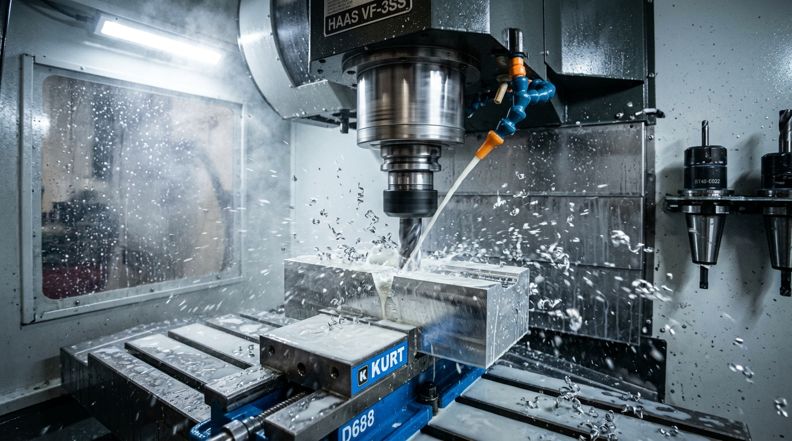
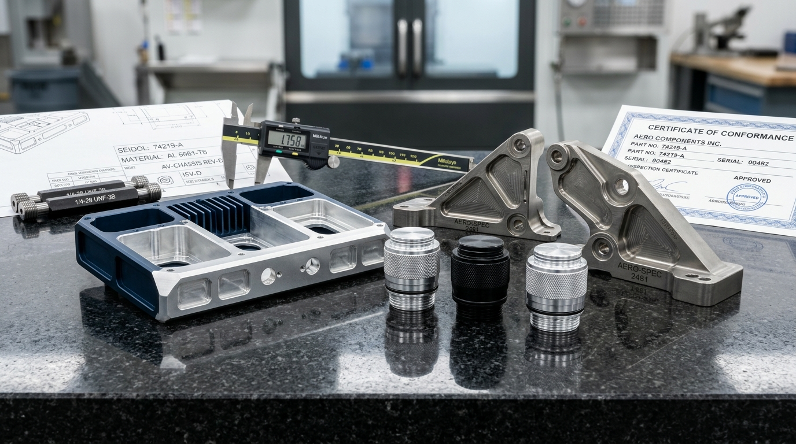
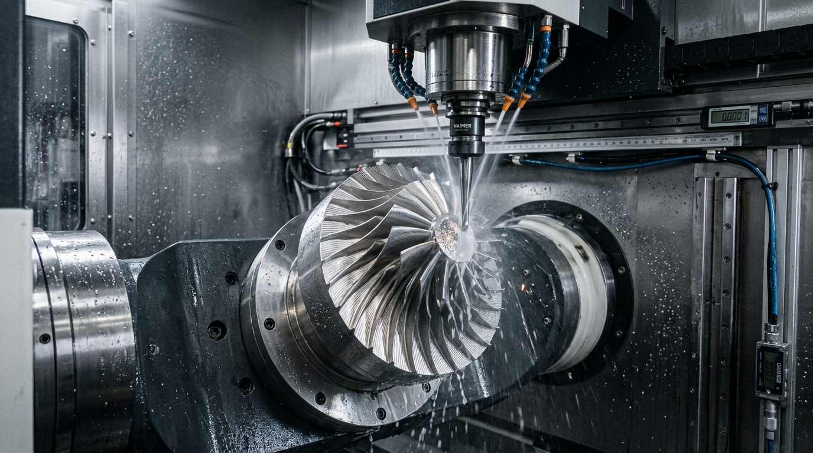
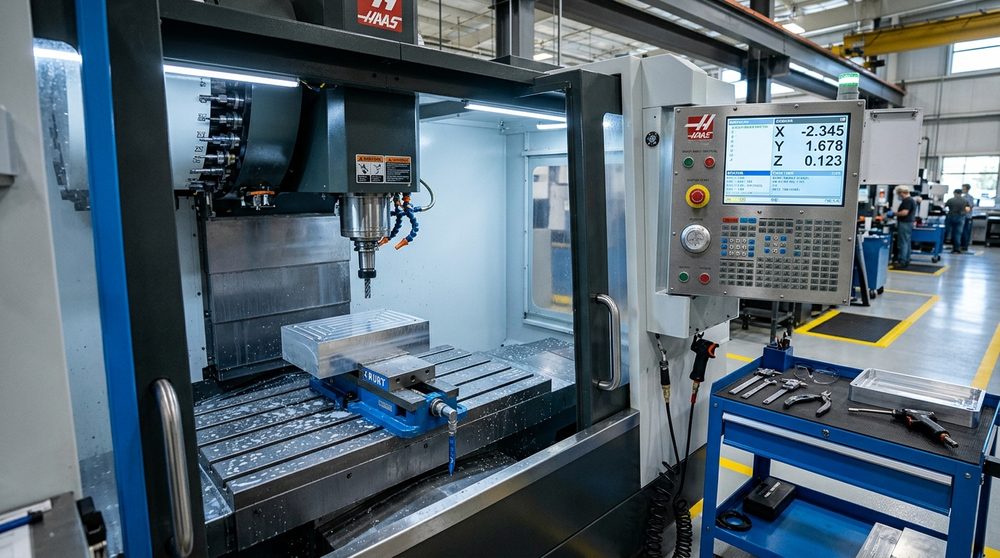
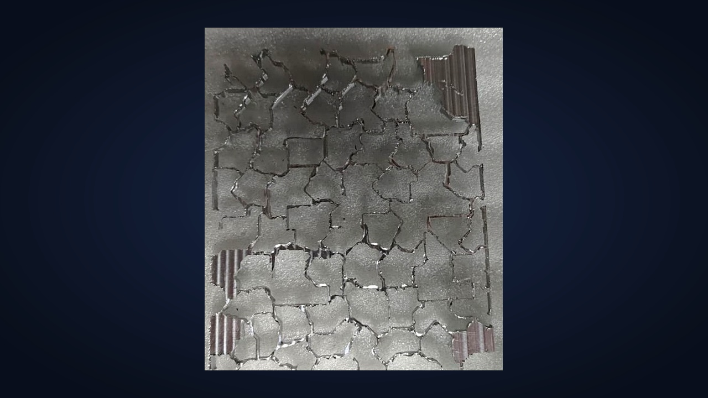
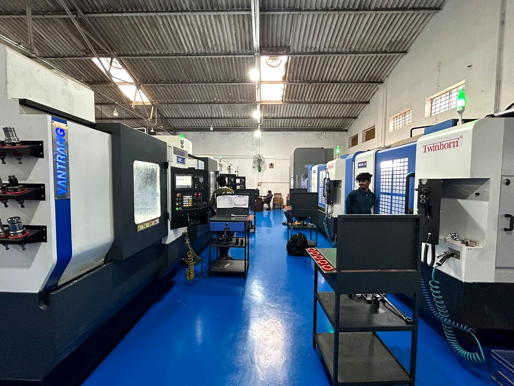

Specialized Engineering Services
Structured machining solutions supporting aerospace, defense, automotive, and precision industrial engineering requirements.

Precision MillingCNC Milling
High-precision 3-axis and multi-axis milling for complex prismatic geometry, face milling, pocket milling, and contoured surfacing with high-flow coolant stabilization.
- Prismatic & 3D contoured surface milling
- Multi-flute end milling & high-speed face mills
- Rigid fixturing for minimal vibrational deflection
- Machining aluminium, stainless steel & alloy steels
 Simultaneous 5-Axis
Simultaneous 5-Axis
5-Axis CNC Machining
Continuous multi-axis machining utilizing our Hurco VC 500i vertical machining center, enabling intricate geometries, sculpted impellers, and compound angles in minimal setups.
- Hurco VC 500i 5-axis vertical machining center
- Single clamping setup eliminates datum transfer error
- Sculpted aerofoils, impellers, and angled undercuts
- Complex 5-sided prismatic and rotational contours

Engineered PartsPrecision Component Manufacturing
Complete component manufacturing from raw engineering materials to finished high-tolerance parts according to customer-supplied 2D and 3D CAD/CAM models.
- Finished prismatic and cylindrical components
- Multi-operation systematic machining sequences
- Edge deburring, chamfering and surface finishing
- Full dimensional verification with granite metrology

Aerospace ClassAerospace Component Machining
Specialized machining of aerospace-grade components, lightweight avionics enclosures, sensor housings, and thin-wall structural brackets with strict geometric control.
- Aerospace aluminium alloys (6061-T6, 7075-T651)
- Thin-wall pocketing and isolation ribs
- Strict GD&T geometric tolerancing conformance
- Secure batch handling and surface protection
 Defense Applications
Defense Applications
Defense Component Manufacturing
Manufacturing of ruggedized defense hardware, guidance brackets, tactical housings, and mechanical assemblies engineered for demanding operational environments.
- High-strength alloy steels, aluminium & specialty alloys
- Precision bore alignment and datum concentricity
- Sealed enclosure lands and perimeter vacuum grooves
- Strict confidentiality and drawing security

Shop Floor FleetVMC Machining
Vertical Machining Center operations utilizing our fleet of 6 three-axis vertical machining centers (including Cosmos and Yantrang platforms) for high-efficiency batch milling.
- 6 three-axis vertical machining centers in line
- High-rigidity cast machine structures
- Parallel multi-machine batch execution
- Large envelope capacity up to Yantrang 850
 Threading & Drilling
Threading & Drilling
Precision Drilling and Tapping
Synchronized CNC rigid tapping and high-precision drilling operations ensuring repeatable hole positioning, true perpendicularity, and clean internal threading.
- Synchronized rigid tapping cycles
- Blind-hole and through-hole threading
- High-density tapped matrix patterns
- Pitch-perfect threads preventing cross-threading
 Bespoke Fabrication
Bespoke Fabrication
Custom Engineering Components
Custom fabrication of specialized mechanical components, thermal cold plates, fluid manifolds, and custom tooling assemblies tailored to proprietary engineering designs.
- High-density thermal cold plates & micro-channels
- Fluid distribution manifolds & hydraulic blocks
- Custom fixturing & specialized machine tooling
- Collaborative manufacturing drawing review

Agile PrototypingPrototype and Small-Batch Manufacturing
Agile machining solutions supporting rapid engineering iterations, pre-production trial lots, functional prototypes, and low-volume specialized runs with swift setup.
- Rapid fixture setup and CAM programming
- Design-for-manufacturability (DFM) feedback
- Flexible batch quantities from single units to batches
- Dimensional validation reports for engineering sign-off
Our Actual Manufacturing Shop Floor
Take a look inside our precision machining facility in Peenya 3rd Stage, Bengaluru, where every component is produced under systematic engineering discipline.

Our 6-Step Manufacturing Process
A disciplined, step-by-step engineering workflow ensuring dimensional accuracy, surface integrity, and reliable delivery for every production batch.
Technical Drawing Review
Thorough evaluation of customer 2D engineering drawings and 3D CAD/CAM models, analyzing GD&T datum structures, thread specifications, and material requirements.
- CAD/CAM geometry validation
- GD&T & datum alignment analysis
- DFM feasibility feedback
Manufacturing Planning
Formulating multi-axis cutter paths, tool holding selection, custom fixture design, and stock material allocation to ensure optimal cycle times and dimensional stability.
- Multi-axis CNC toolpath generation
- Precision fixture & vise configuration
- Certified alloy raw stock staging
CNC Machining
High-precision multi-axis milling, boring, and rigid tapping performed on our 5-axis Hurco and 3-axis VMC fleet with continuous coolant thermal stabilization.
- High-rigidity spindle cutting
- Flood coolant temperature control
- In-process cutter wear monitoring
Component Inspection
First-piece validation and systematic intermediate sampling using calibrated bore gauges, digital micrometers, and thread go/no-go plug gauges.
- First Article Inspection (FAI)
- In-process dimensional checks
- Thread pitch & depth verification
Quality Verification
Final metrological verification conducted on granite surface plates using our calibrated Mahr Digimar 817 CLT 2D linear height gauge and surface standards.
- Mahr 2D height gauge metrology
- Surface roughness parameter validation
- Quality inspection reporting
Final Delivery
Thorough solvent cleaning, ultrasonic deburring check, protective surface wrapping, organized batch packaging, and prompt dispatch to client facilities.
- Surface degreasing & anti-corrosion wrap
- Individual protective cushioning
- Batch traceability & timely dispatch